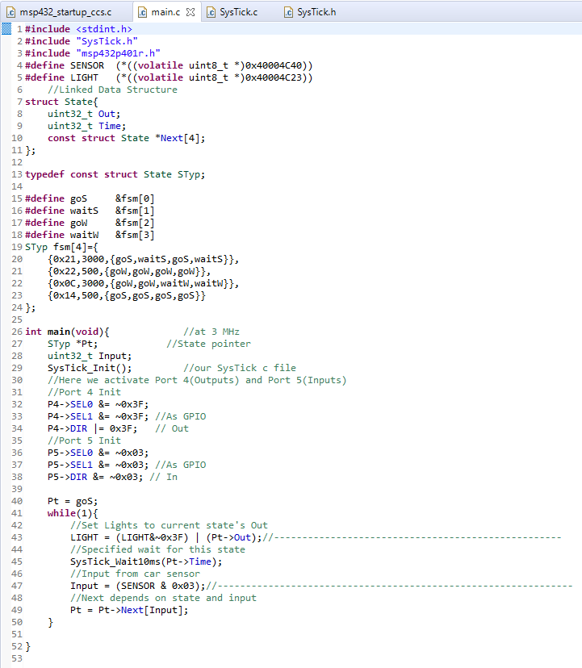
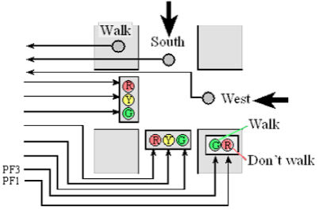
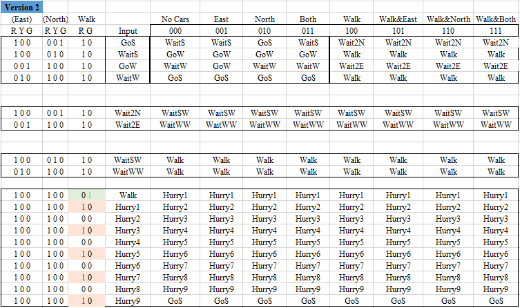

Traffic Light Controller
FSM-Based miniature Traffic Light System using an MSP432
Project Details / Background
In this coursework project, I designed and implemented a traffic light controller using a Moore Finite State Machine on an MSP432 microcontroller. The system controls south and west traffic using LED outputs, with timing handled by a SysTick timer at 3MHz. A pedestrian walk signal is integrated into the controller and is triggered through a button press, activating the walk sequence state.
The SysTick timer created precise delays to control how long each light remained on. Despite initial challenges with faulty hardware and mapping the FSM into C, the final system functioned reliably through all programmed states.

Programmed in C | Uses Moore Finite State Machine

Traffic Light diagram used

The different states documented on Excel